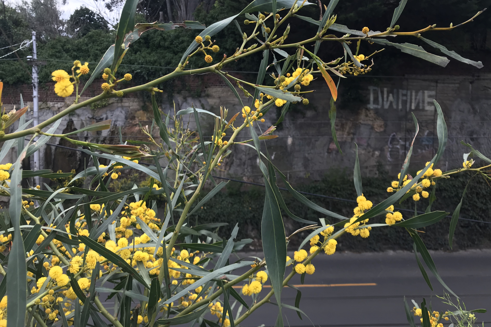
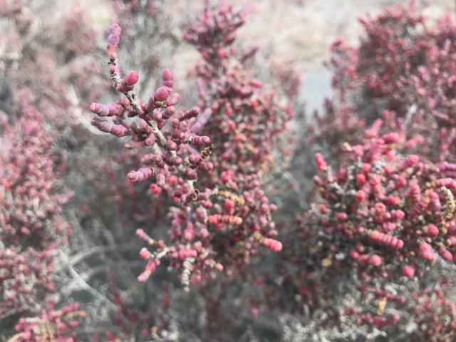
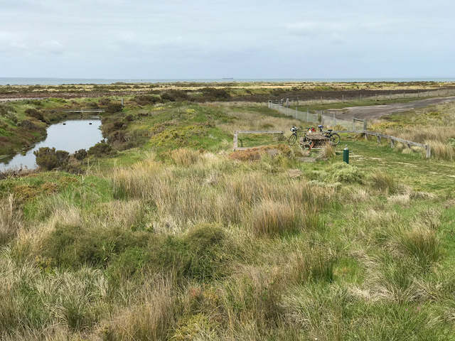
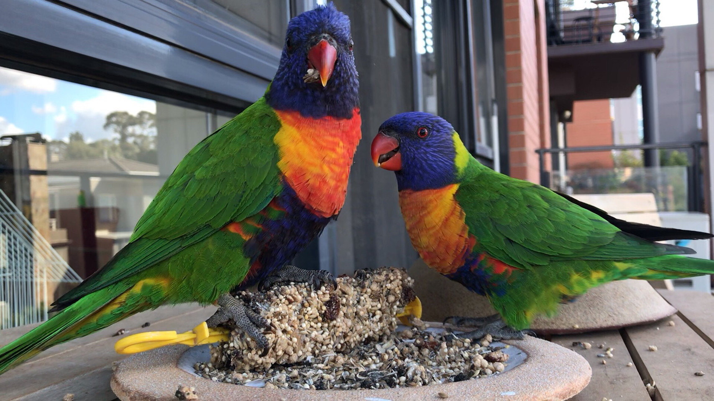
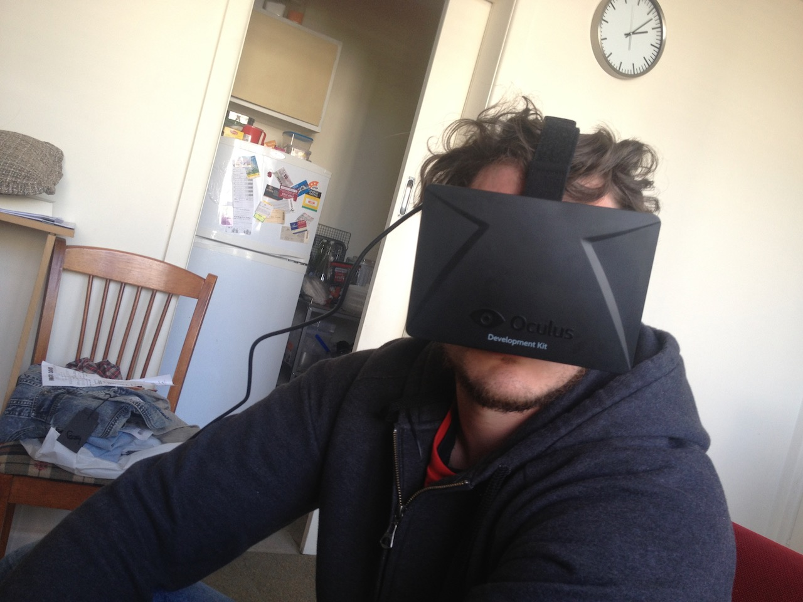
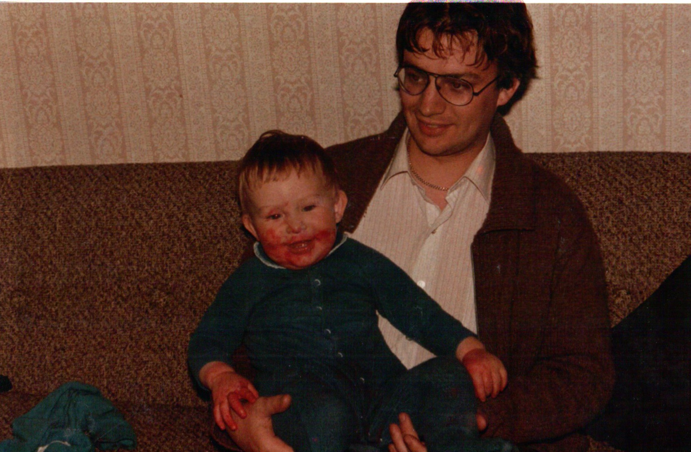

Wattle in Hawthorn | September 19, 2020Alien botany | 2019-09-29Mig & Mog Ride to Point Cook | 2019-09-29Visitors | 2019-08-25"Flashlight looks dope!" | 2013-06-02"John + Ben after eating Wilbur Worm Oct 1983" | 2083-10-01
Log entries
Kompromat – 2022-04-05
GDSC Open Source workshop – 2022-04-01
First hackathon (RMIT Activator) – 2022-03-31
Programming Club trivia night – 2022-03-28
Square Sounds – 2020-02-22
Move to Hawthorn – 2014-01-28
CGU (start/end dates TBC) – 2013-09-30
Sarah gets Fuuko – 2013-06-01
Trip to Bright with Aaron and Kai – 2013-03-09
Trip to Wollongong – 2013-01-25
We meet Everclear and they are really nice – 2012-10-14